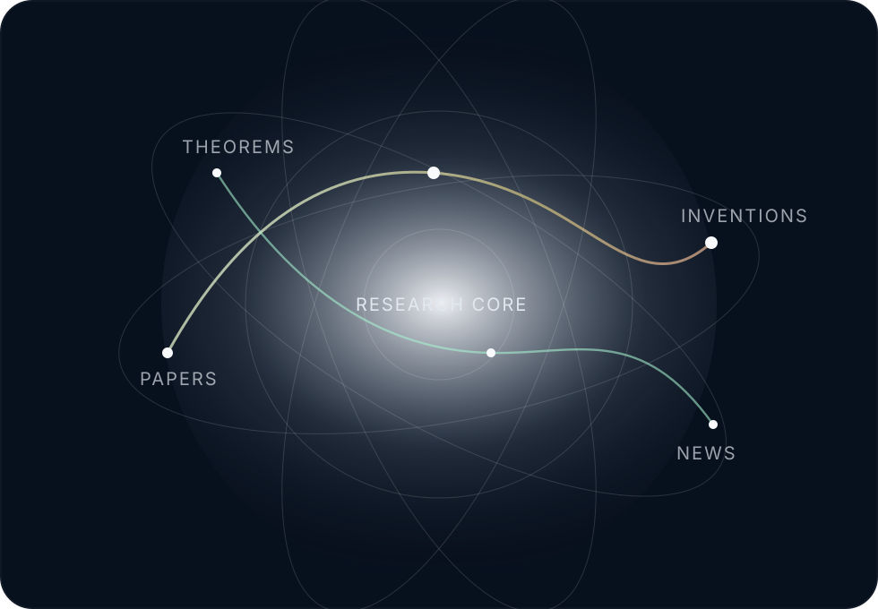

Independent research registry
A precise home for papers, theorems, inventions, field notes, and public updates.
A research-grade interface for publishing and navigating serious work: formal documents, speculative writing, technical discoveries, invention records, and dated news.
- 0
- records indexed
- 6
- entry classes
- 2026
- active cycle
Record system
Everything belongs to a searchable, typed record.
Use this area as the master catalogue for work that needs authority, versioning, and long-term discoverability.
Awaiting first entry
No records have been published yet.
Add work inside data/records.js. The interface will automatically render entries, counts, filters, search, and record cards.
Disciplines of output
Six classes for a complete intellectual body of work.
Papers
Formal arguments, long-form proofs, technical reports, research manuscripts, and PDF-ready documents.
Theorems
Definitions, axioms, propositions, lemmas, conjectures, proof sketches, and finished formal results.
Discoveries
Observed patterns, empirical findings, conceptual breakthroughs, and newly identified mechanisms.
Inventions
Systems, methods, prototypes, devices, workflows, product ideas, and technical architectures.
Writings
Essays, notes, criticism, theoretical fragments, arguments, and polished public texts.
News
Dated updates, releases, revisions, public milestones, version changes, and field announcements.

Navigation model
Designed as a living atlas, not a blog.
Each item can be treated as a scholarly object: typed, dated, tagged, versioned, and connected to related work. The page is built to scale from one note to a complete personal research corpus.
- Typed recordsEvery item has a class, status, year, abstract, tags, and target link.
- Low-noise discoverySearch and filters prioritize retrieval over decoration.
- Public-ready structureClear areas for manuscripts, proofs, inventions, and announcements.
Publication protocol
A clean standard for adding new work later.
Classify
Choose the correct record type: paper, theorem, discovery, invention, writing, or news.
Abstract
Write one exact paragraph stating the problem, method, and contribution.
Version
Mark the entry as draft, review, published, or sealed so readers know its maturity.
Link
Connect the card to a PDF, article page, notebook, proof, dataset, or release note.
Editing surface
Ready for your first record.
Open data/records.js, paste a new object into window.RESEARCH_RECORDS, and the front page becomes populated without redesigning the layout.
{
title: "Title of the work",
type: "paper",
year: "2026",
status: "draft",
abstract: "One precise paragraph describing the work.",
tags: ["field", "method"],
href: "./papers/title.pdf"
}